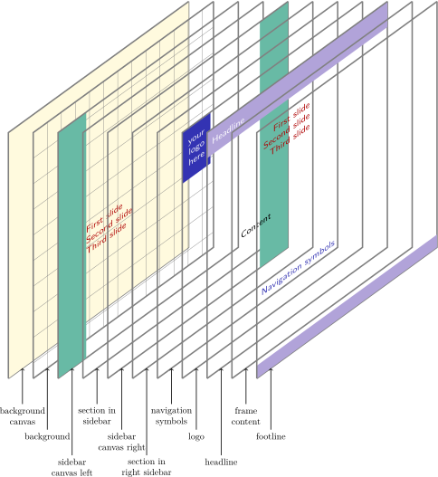
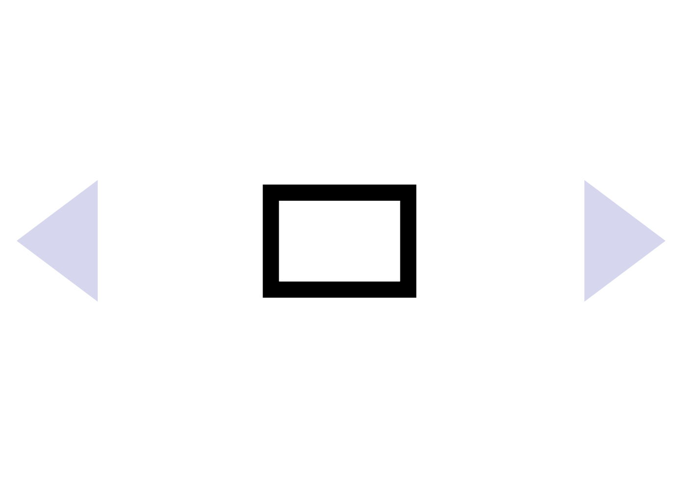
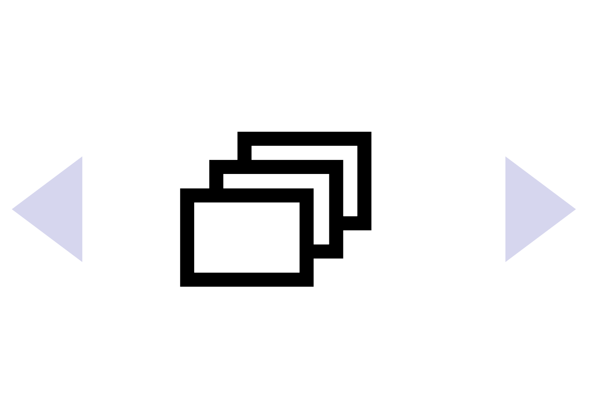
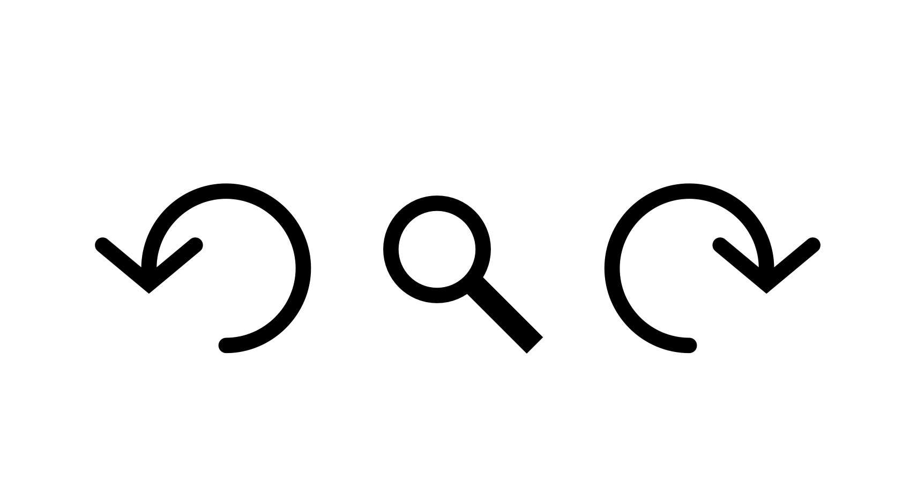

Building a Presentation
8 Creating Frames
8.1 The Frame Environment¶
A presentation consists of a series of frames. Each frame consists of a series of slides. You create a frame using frame environment.1 All of the text that is not tagged by overlay specifications is shown on all slides of the frame. (Overlay specifications are explained in more detail in later sections. For the moment, let’s just say that an overlay specification is a list of numbers or number ranges in pointed brackets that is put after certain commands as in \uncover<1,2>{Text}.) If a frame contains commands that have an overlay specification, the frame will contain multiple slides; otherwise it contains only one slide.
\begin{frame}<>[<>][]{}{}
\end{frame}
The dictates which slides of a frame are to be shown. If left out, the number is calculated automatically. The can be normal LaTeX text, but may not contain \verb commands or verbatim environments or any environment that changes the character codes, unless the fragile option is given.
The optional is detected by an opening brace, that is, if the first thing in the frame is an opening brace then it is assumed that a frame title follows. Likewise, the optional is detected the same way, that is, by an opening brace following the . The title and subtitle can also be given using the \frametitle and \framesubtitle commands.
The normal LaTeX command \frame is available inside frames with its usual meaning. Both outside and inside frames it is always available as \framelatex.
Example:
\begin{frame}{A title}
Some content.
\end{frame}
%% Same effect:
\begin{frame}
\frametitle{A title}
Some content.
\end{frame}
Example:
\begin{frame}{Outline} % frame is only shown in beamer mode
\tabelofcontent[current]
\end{frame}
Normally, the complete is put on a slide. If the text does not fit on a slide, being too high, it will be squeezed as much as possible, a warning will be issued, and the text just extends unpleasantly over the bottom. You can use the option allowframebreaks to cause the to be split among several slides, though you cannot use overlays then. See the explanation of the allowframebreaks option for details.
The is an optional argument that is “detected” according to the following rule: If the first optional argument in square brackets starts with a <, then this argument is a , otherwise it is a normal argument. Thus \begin{frame}[<+->][plain] would be legal, but also \begin{frame}[plain].
The effect of the is the following: Every command or environment inside the frame that accepts an action specification, see Section 9.6.3, (this includes the \item command, the actionenv environment, \action, and all block environments) and that is not followed by an overlay specification gets the as its specification. By providing an incremental specification like <+->, see Section 9.6.4, this will essentially cause all blocks and all enumerations to be uncovered piece-wise (blocks internally employ action specifications).
Example: In this frame, the theorem is shown from the first slide on, the proof from the second slide on, with the first two itemize points shown one after the other; the last itemize point is shown together with the first one. In total, this frame will contain four slides.
\begin{frame}[<+->]
\begin{theorem}
$A = B$.
\end{theorem}
\begin{proof}
\begin{itemize}
\item Clearly, $A = C$.
\item As shown earlier, $C = B$.
\item<3-> Thus $A = B$.
\end{itemize}
\end{proof}
\end{frame}
The following may be given:
• allowdisplaybreaks= causes the AMSTeX command \allowdisplaybreaks[] to be issued for the current frame. The can be a value between 0 (meaning formulas may never be broken) and 4 (the default, meaning that formulas can be broken anywhere without any penalty). The option is just a convenience and makes sense only together with the allowsframebreaks option.
• allowframebreaks=. When this option is given, the frame will be automatically broken up into several frames if the text does not fit on a single slide. In detail, when this option is given, the following things happen:
1. Overlays are not supported.
2. Any notes for the frame created using the \note command will be inserted after the first page of the frame.
3. Any footnotes for the frame will be inserted on the last page of the frame.
4. If there is a frame title, each of the pages will have this frame title, with a special note added indicating which page of the frame that page is. By default, this special note is a Roman number. However, this can be changed using the following template.
Beamer-Template/-Color/-Font frametitle continuation
The text of this template is inserted at the end of every title of a frame with the allowframebreaks option set.
The following template options are predefined:
– [default] Installs a Roman number as the template. The number indicates the current page of the frame.
– [roman] Alias for the default.
– [from second][] Installs a template that inserts from the second page of a frame on. By default, the text inserted is \insertcontinuationtext, which in turn is (cont.) by default.
– [singleframecheck][] Installs a template that inserts starting from the first page, but only if one or more frame breaks occur in the frame. By default, the text inserted is \insertcontinuationcountroman, which will show the continuation count as Roman number.
The following inserts are available:
– \insertcontinuationcount inserts the current page of the frame as an arabic number.
– \insertcontinuationcountroman inserts the current page of the frame as an (uppercase) Roman number.
– \insertcontinuationtext just inserts the text (cont.) or, possibly, a translation thereof (like (Forts.) in German).
If a frame needs to be broken into several pages, the material on all but the last page fills only 95% of each page by default. Thus, there will be some space left at the top and/or bottom, depending on the vertical placement option for the frame. This yields a better visual result than a 100% filling, which typically looks crowded. However, you can change this percentage using the optional argument , where 1 means 100% and 0.5 means 50%. This percentage includes the frame title. Thus, in order to split a frame “roughly in half,” you should give 0.6 as .
Most of the fine details of normal
TeX
page breaking also apply to this option. For example, when you
wish equations to be broken automatically, be sure to use the
\allowdisplaybreaks command. You can
insert \break,
\nobreak, and
\penalty commands to control where
breaks should occur. The commands
\pagebreak and
\nopagebreak also work, including
their options. Since you typically do not want page breaks for the
frame to apply also to the
article mode, you can add a mode
specification like
The use of this option is evil. In a (good) presentation you prepare each slide carefully and think twice before putting something on a certain slide rather than on some different slide. Using the allowframebreaks option invites the creation of horrible, endless presentations that resemble more a “paper projected on the wall” than a presentation. Nevertheless, the option does have its uses. Most noticeably, it can be convenient for automatically splitting bibliographies or long equations.
Example:
\begin{frame}[allowframebreaks]{References}
\begin{thebibliography}{XX}
\bibitem...
\bibitem...
...
\bibitem...
\end{thebibliography}
\end{frame}
Example:
\begin{frame}[allowframebreaks,allowdisplaybreaks]{A Long Equation}
\begin{align}
\zeta(2) &= 1 + 1/4 + 1/9 + \cdots \\
&= ... \\
...
&= \pi^2/6.
\end{align}
\end{frame}
• b, c, t will cause the frame to be vertically aligned at the bottom/center/top. This overrides the global placement policy, which is governed by the class options t and c.
• s will cause the content of the frame to be distributed vertically across the whole frame. For a reasonable usage of the option, the user has to add “stretchable” material to the frame content, e.g. \vfill or similar macros.
• noframenumbering tells beamer not to step the framenumber counter for this frame.
• fragile=singleslide tells beamer that the frame contents is “fragile.” This means that the frame contains text that is not “interpreted as usual.” For example, this applies to verbatim text, which is, obviously, interpreted somewhat differently from normal text.
If a frame contains fragile text, different internal mechanisms are used to typeset the frame to ensure that inside the frame the character codes can be reset. The price of switching to another internal mechanism is that either you cannot use overlays or an external file needs to be written and read back (which is not always desirable).
In detail, the following happens when this option is given for normal (pdf)LaTeX: The contents of the frame is scanned and then written to a special file named .vrb or, if a label has been assigned to the frame, ..vrb. Then, the frame is started anew and the content of this file is read back. Since, upon reading of a file, the character codes can be modified, this allows you to use both verbatim text and overlays.
To determine the end of the frame, the following rule is used: The first occurrence of a single line containing exactly \end{} ends the frame. The is normally frame, but it can be changed using the environment option. This special rule is needed since the frame contents is, after all, not interpreted when it is gathered.
You can also add the optional information =singleslide. This tells beamer that the frame contains only a single slide. In this case, the frame contents is not written to a special file, but interpreted directly, which is “faster and cleaner.”
• environment=. This option is useful only in conjunction with the fragile option (but it is not used for fragile=singleslide, only for the plain fragile). The is used to determine the end of the scanning when gathering the frame contents. Normally, the frame ends when a line reading \end{frame} is reached. However, if you use \begin{frame} inside another environment, you need to use this option:
Example:
\newenvironment{slide}[1]
{\begin{frame}[fragile,environment=slide]
\frametitle{#1}}
{\end{frame}}
\begin{slide}{My title}
Text.
\end{slide}
If you did not specify the option environment=slide in the above example, TeX would “miss” the end of the slide since it does not interpret text while gathering the frame contents.
• label= causes the frame’s contents to be stored under the name for later resumption using the command \againframe. Furthermore, on each slide of the frame a label with the name <> is created. On the first slide, furthermore, a label with the name is created (so the labels and <1> point to the same slide). Note that labels in general, and these labels in particular, can be used as targets for hyperlinks.
You can use this option together with fragile.
• plain causes the headlines, footlines, and sidebars to be suppressed. This is useful for creating single frames with different head- and footlines or for creating frames showing big pictures that completely fill the frame.
Example: A frame with a picture completely filling the frame:
\begin{frame}[plain]
\begin{centering}%
\pgfimage[height=\paperheight]{somebigimagefile}%
\par%
\end{centering}%
\end{frame}
Example: A title page, in which the head- and footlines are replaced by two graphics.
\setbeamertemplate{title page}
{
\pgfuseimage{toptitle}
\vskip0pt plus 1filll
\begin{centering}
{\usebeamerfont{title}\usebeamercolor[fg]{title}\inserttitle}
\insertdate
\end{centering}
\vskip0pt plus 1filll
\pgfuseimage{bottomtitle}
}
\begin{frame}[plain]
\titlepage
\end{frame}
• shrink=. This option will cause the text of the frame to be shrunk if it is too large to fit on the frame. beamer will first normally typeset the whole frame. Then it has a look at vertical size of the frame text (excluding the frame title). If this vertical size is larger than the text height minus the frame title height, beamer computes a shrink factor and scales down the frame text by this factor such that the frame text then fills the frame completely. Using this option will automatically cause the squeeze option to be used, also.
Since the shrinking takes place only after everything has been typeset, shrunk frame text will not fill the frame completely horizontally. For this reason, you can specify a like 20. If this percentage is specified, the frame will be shrunk at least by this percentage. Since beamer knows this, it can increase the horizontal width proportionally such that the shrunk text once more fills the entire frame. If, however, the percentage is not enough, the text will be shrunk as needed and you will be punished with a warning message.
The best way to use this option is to identify frames that are overly full, but in which all text absolutely has to be fit on a single frame. Then start specifying first shrink=5, then shrink=10, and so on, until no warning is issued any more (or just ignore the warning when things look satisfactory).
Using this option is very evil. It will result in changes of the font size from slide to slide, which is a typographic nightmare. Its usage can always be avoided by restructuring and simplifying frames, which will result in a better presentation.
Example:
\begin{frame}[shrink=5]
Some evil endless slide that is 5\% too large.
\end{frame}
• squeeze causes all vertical spaces in the text to be squeezed together as much as possible. Currently, this just causes the vertical space in enumerations or itemizations to be reduced to zero.
Using this option is not good, but also not evil.
In article mode, the
frame environment does not create any
visual reference to the original frame (no frame is drawn).
Rather, the frame text is inserted into the normal text. To change
this, you can modify the templates
frame begin and
frame end, see below. To suppress a
frame in article mode, you can, for
example, specify
Beamer-Template frame begin
The text of this template is inserted at the beginning of each frame in article mode (and only there). You can use it, say, to start a minipage environment at the beginning of a frame or to insert a horizontal bar or whatever.
Beamer-Template frame end
The text of this template is inserted at the end of each frame in article mode.
You can use the frame environment inside other environments like this
\newenvironment{slide}{\begin{frame}}{\end{frame}}
or like this
\newenvironment{myframe}[1]
{\begin{frame}[fragile,environment=myframe]\frametitle{#1}}
{\end{frame}}
However, the actual mechanics are somewhat sensitive since the “collecting” of the frame contents is not easy, so do not attempt anything too fancy. As a rule, the beginning of the environment can be pretty arbitrary, but the ending must end with \end{frame} and should not contain any \end{xxx}. Anything really complex is likely to fail. If you need some \end{xxx} there, define a new command that contains this stuff as in the following example:
\newenvironment{itemizeframe}
{\begin{frame}\startitemizeframe}
{\stopitemizeframe\end{frame}}
\newcommand\startitemizeframe{\begin{bfseries}\begin{itemize}}
\newcommand\stopitemizeframe{\end{itemize}\end{bfseries}}
\begin{itemizeframe}
\item First item
\end{itemizeframe}
8.2 Components of a Frame¶
Each frame consists of several components:
-
1. a headline and a footline,
-
2. a left and a right sidebar,
-
3. navigation bars,
-
4. navigation symbols,
-
5. a logo,
-
6. a frame title,
-
7. a background, and
-
8. some frame contents.
A frame need not have all of these components. Usually, the first three components are automatically setup by the theme you are using. Figure 1 shows an overview of the order in which the different components are drawn.

Figure 1: Diagram of the order in which the different frame components are drawn (image originally created by Andrew Stacey)
8.2.1 The Headline and Footline¶
The headline of a frame is the area at the top of the frame. If it is not empty, it should show some information that helps the audience orientate itself during your talk. Likewise, the footline is the area at the bottom of the frame.
beamer does not use the standard LaTeX mechanisms for typesetting the headline and the footline. Instead, the special headline and footline templates are used to typeset them.
The size of the headline and the footline is determined as follows: Their width is always the paper width. Their height is determined by tentatively typesetting the headline and the footline at the start of the frame.
The appearance of the headline and footline is determined by the following templates:
Beamer-Template/-Color/-Font headline
This template is used to typeset the headline. The beamer-color and -font headline are installed at the beginning. The background of the beamer-color is not used by default, that is, no background rectangle is drawn behind the headline and footline (this may change in the future with the introduction of a headline and a footline canvas).
The width of the headline is the whole paper width. The height is determined automatically as described above. The headline is typeset in vertical mode with interline skip turned off and the paragraph skip set to zero.
Inside this template, the \\ command is changed such that it inserts a comma instead.
Example:
\setbeamertemplate{headline}
{%
\begin{beamercolorbox}{section in head/foot}
\vskip2pt\insertnavigation{\paperwidth}\vskip2pt
\end{beamercolorbox}%
}
The following template options are predefined:
• [default] The default is just an empty headline. To get the default headline of earlier versions of the beamer class, use the compatibility theme.
• [infolines theme] This option becomes available (and is used) if the infolines outer theme is loaded. The headline shows current section and subsection.
• [miniframes theme] This option becomes available (and is used) if the miniframes outer theme is loaded. The headline shows the sections with small clickable mini frames below them.
• [sidebar theme] This option becomes available (and is used) if the sidebar outer theme is loaded and if the head height (and option of the sidebar theme) is not zero. In this case, the headline is an empty bar of the background color frametitle with the logo to the left or right of this bar.
• [smoothtree theme] This option becomes available (and is used) if the smoothtree outer theme is loaded. A “smoothed” navigation tree is shown in the headline.
• [smoothbars theme] This option becomes available (and is used) if the smoothbars outer theme is loaded. A “smoothed” version of the miniframes headline is shown.
• [tree] This option becomes available (and is used) if the tree outer theme is loaded. A navigational tree is shown in the headline.
• [split theme] This option becomes available (and is used) if the split outer theme is loaded. The headline is split into a left part showing the sections and a right part showing the subsections.
• [text line]{} The headline is typeset more or less as if it were a normal text line with the as contents. The left and right margin are setup such that they are the same as the margins of normal text. The is typeset inside an \hbox, while the headline is normally typeset in vertical mode.
Inside the template numerous inserts can be used:
• \insertnavigation{} Inserts a horizontal navigation bar of the given into a template. The bar lists the sections and below them mini frames for each frame in that section.
• \insertpagenumber Inserts the current page number into a template.
• \insertsection Inserts the current section into a template.
• \insertsectionnavigation{} Inserts a vertical navigation bar containing all sections, with the current section highlighted.
• \insertsectionnavigationhorizontal{}{}{} Inserts a horizontal navigation bar containing all sections, with the current section highlighted. The will be inserted to the left of the sections, the {} to the right. By inserting a triple fill (a filll) you can flush the bar to the left or right.
Example:
\insertsectionnavigationhorizontal{.5\textwidth}{\hskip0pt plus1filll}{}
• \insertshortauthor[] Inserts the short version of the author into a template. The text will be printed in one long line, line breaks introduced using the \\ command are suppressed. The following may be given:
– width= causes the text to be put into a multi-line minipage of the given size. Line breaks are still suppressed by default.
– center centers the text inside the minipage created using the width option, rather than having it left aligned.
– respectlinebreaks causes line breaks introduced by the \\ command to be honored.
Example: \insertauthor[width={3cm},center,respectlinebreaks]
• \insertshortdate[] Inserts the short version of the date into a template. The same options as for \insertshortauthor may be given.
• \insertshortinstitute[] Inserts the short version of the institute into a template. The same options as for \insertshortauthor may be given.
• \insertshortpart[] Inserts the short version of the part name into a template. The same options as for \insertshortauthor may be given.
• \insertshorttitle[] Inserts the short version of the document title into a template. Same options as for \insertshortauthor may be given.
• \insertshortsubtitle[] Inserts the short version of the document subtitle. Same options as for \insertshortauthor may be given.
• \insertsubsection Inserts the current subsection into a template.
• \insertsubsubsection Inserts the current subsection into a template.
• \insertsubsectionnavigation{} Inserts a vertical navigation bar containing all subsections of the current section, with the current subsection highlighted.
•
\insertsubsectionnavigationhorizontal{}{}{}
See
\insertsectionnavigationhorizontal.
• \insertverticalnavigation{} Inserts a vertical navigation bar of the given into a template. The bar shows a little table of contents. The individual lines are typeset using the templates section in head/foot and subsection in head/foot.
• \insertframenumber Inserts the number of the current frame (not slide) into a template.
• \insertslidenumber Inserts the number of the current slide in frame into a template.
• \insertoverlaynumber Inserts the number of current overlay counter into a template. This is generally equal to \insertslidenumber, except when an overlay specification is used in a frame environment.
• \inserttotalframenumber Inserts the total number of the frames (not slides) into a template. The number is only correct on the second run of TeX on your document.
• \insertmainframenumber Inserts the number of the frames in the main part (before \appendix command) into a template. The number is only correct on the second run of TeX on your document.
• \insertappendixframenumber Inserts the number of the frames in the appendix part (after \appendix command) into a template. The number is only correct on the second run of TeX on your document.
• \insertframestartpage Inserts the page number of the first page of the current frame.
• \insertframeendpage Inserts the page number of the last page of the current frame.
• \insertsubsectionstartpage Inserts the page number of the first page of the current subsection.
• \insertsubsectionendpage Inserts the page number of the last page of the current subsection.
• \insertsectionstartpage Inserts the page number of the first page of the current section.
• \insertsectionendpage Inserts the page number of the last page of the current section.
• \insertpartstartpage Inserts the page number of the first page of the current part.
• \insertpartendpage Inserts the page number of the last page of the current part.
• \insertpresentationstartpage Inserts the page number of the first page of the presentation.
• \insertpresentationendpage Inserts the page number of the last page of the presentation (excluding the appendix).
• \insertappendixstartpage Inserts the page number of the first page of the appendix. If there is no appendix, this number is the last page of the document.
• \insertappendixendpage Inserts the page number of the last page of the appendix. If there is no appendix, this number is the last page of the document.
• \insertdocumentstartpage Inserts 1.
• \insertdocumentendpage Inserts the page number of the last page of the document (including the appendix).
• \usebeamertemplate*{page number in head/foot} inserts a customisable template which e.g. inserts the current and total number of frames.
Beamer-Template/-Color/-Font footline
This template behaves exactly the same way as the headline. Note that, sometimes quite annoyingly, beamer currently adds a space of 4pt between the bottom of the frame’s text and the top of the footline.
The following template options are predefined:
• [default] The default is an empty footline. Note that the navigational symbols are not part of the footline by default. Rather, they are part of an (invisible) right sidebar.
• [infolines theme] This option becomes available (and is used) if the infolines outer theme is loaded. The footline shows things like the author’s name and the title of the talk.
• [miniframes theme] This option becomes available (and is used) if the miniframes outer theme is loaded. Depending on the exact options that are used when the miniframes theme is loaded, different things can be shown in the footline.
• [page number] Shows the current page number in the footline.
• [frame number] Shows the current frame number in the footline.
• [split] This option becomes available (and is used) if the split outer theme is loaded. The footline (just like the headline) is split into a left part showing the author’s name and a right part showing the talk’s title.
• [text line]{} The footline is typeset more or less as if it were a normal text line with the as contents. The left and right margin are setup such that they are the same as the margins of normal text. The is typeset inside an \hbox, while the headline is normally typeset in vertical mode. Using the \strut command somewhere in such a line might be a good idea.
The same inserts as for headlines can be used.
Beamer-Template/-Color/-Font page number in head/foot
These beamer-color and -font are used to typeset the page number or frame number in the footline.
The beamer-template provides a convenient way to format the page or frame number in the footline. It is used by the infolines outer theme and the page number and frame number footline themes. It can also be used with the miniframes and split outer themes, but for them it is set to empty as default.
The following template options are predefined:
• [default] The default option is empty.
• [framenumber] This option inserts the current frame number.
• [totalframenumber] In addition to the current frame number, this option also shows the total number of frames.
• [appendixframenumber] This options replicates the behaviour of the appendixnumberbeamer package. In the main part before the \appendix command the current frame number and the total number of frames in the main part is displayed. In the appendix only the frame number within the appendix and the total number of frames in the appendix are shown.
• [pagenumber] Shows the current page number.
• [totalpagenumber] In addition to the current page number also the total page number is displayed.
8.2.2 The Sidebars¶
Sidebars are vertical areas that stretch from the lower end of the headline to the top of the footline. There can be a sidebar at the left and another one at the right (or even both). Sidebars can show a table of contents, but they could also be added for purely aesthetic reasons.
When you install a sidebar template, you must explicitly specify the horizontal size of the sidebar using the command \setbeamersize with the option sidebar width left or sidebar width right. The vertical size is determined automatically. Each sidebar has its own background canvas, which can be setup using the sidebar canvas templates.
Adding a sidebar of a certain size, say 1 cm, will make the main text 1 cm narrower. The distance between the inner side of a side bar and the outer side of the text, as specified by the command \setbeamersize with the option text margin left and its counterpart for the right margin, is not changed when a sidebar is installed.
Internally, the sidebars are typeset by showing them as part of the headline. The beamer class keeps track of six dimensions, three for each side: the variables \beamer@leftsidebar and \beamer@rightsidebar store the (horizontal) sizes of the side bars, the variables \beamer@leftmargin and \beamer@rightmargin store the distance between sidebar and text, and the macros \Gm@lmargin and \Gm@rmargin store the distance from the edge of the paper to the edge of the text. Thus the sum \beamer@leftsidebar and \beamer@leftmargin is exactly \Gm@lmargin. Thus, if you wish to put some text right next to the left sidebar, you might write \hskip-\beamer@leftmargin to get there.
For convenience, the width of the sidebar and the height of its headline are accessible through the macros \beamersidebarwidth and \beamerheadheight, respectively.
Beamer-Template/-Color/-Font sidebar left
Color/font parents: sidebar
The template is used to typeset the left sidebar. As mentioned above, the size of the left sidebar is set using the command
\setbeamersize{sidebar width left=2cm}
beamer will not clip sidebars automatically if they are too large.
When the sidebar is typeset, it is put inside a \vbox. You should currently setup things like the \hsize or the \parskip yourself.
The following template options are predefined:
• [default] installs an empty template.
• [sidebar theme] This option is available if the outer theme sidebar is loaded with the left option. In this case, this options is selected automatically. It shows a mini table of contents in the sidebar.
Beamer-Template/-Color/-Font sidebar right
Color/font parents: sidebar
This template works the same way as the template for the left.
The following template options are predefined:
• [default] The default right sidebar has zero width. Nevertheless, it shows navigational symbols and, if installed, a logo at the bottom of the sidebar, protruding to the left into the text.
• [sidebar theme] This option is available, if the outer theme sidebar is loaded with the right option. In this case, this option is selected automatically. It shows a mini table of contents in the sidebar.
Beamer-Template sidebar canvas left
Like the overall background canvas, this canvas is drawn behind the actual text of the sidebar. This template should normally insert a rectangle of the size of the sidebar, though a too large height will not lead to an error or warning. When this template is called, the beamer-color sidebar left will have been installed.
The following template options are predefined:
• [default] uses a large rectangle colored with sidebar.bg as the sidebar canvas. However, if the background of sidebar is empty, nothing is drawn and the canvas is “transparent.”
• [vertical shading][] installs a vertically shaded background. The following may be given:
– top= specifies the color at the top of the sidebar. By default, 25% of the foreground of the beamer-color palette primary is used.
– bottom= specifies the color at the bottom of the sidebar (more precisely, at a distance of the page height below the top of the sidebar). By default, the background of normal text at the moment of invocation of this command is used.
– middle= specifies the color for the middle of the sidebar. Thus, if this option is given, the shading changes from the bottom color to this color and then to the top color.
– midpoint= specifies at which point of the page the middle color is used. A factor of 0 is the bottom of the page, a factor of 1 is the top. The default, which is 0.5, is in the middle.
Note that you must give “real” LaTeX colors here. This often makes it necessary to invoke the command \usebeamercolor before this command can be used.
Also note, that the width of the sidebar should be setup before this option is used.
Example: A stylish, but not very useful shading:
{\usebeamercolor{palette primary}}
\setbeamertemplate{sidebar canvas}[vertical shading]
[top=palette primary.bg,middle=white,bottom=palette primary.bg]
• [horizontal shading][] installs a horizontally shaded background. The following may be given:
– left= specifies the color at the left of the sidebar.
– right= specifies the color at the right of the sidebar.
– middle= specifies the color in the middle of the sidebar.
– midpoint= specifies at which point of the sidebar the middle color is used. A factor of 0 is the left of the sidebar, a factor of 1 is the right. The default, which is 0.5, is in the middle.
Example: Adds two “pillars”
\setbeamersize{sidebar width left=0.5cm,sidebar width right=0.5cm}
{\usebeamercolor{sidebar}}
\setbeamertemplate{sidebar canvas left}[horizontal shading]
[left=white,middle=sidebar.bg,right=white]
\setbeamertemplate{sidebar canvas right}[horizontal shading]
[left=white,middle=sidebar.bg,right=white]
Beamer-Template sidebar canvas right
Works exactly as for the left side.
8.2.3 Navigation Bars¶
Many themes install a headline or a sidebar that shows a navigation bar. Although these navigation bars take up quite a bit of space, they are often useful for two reasons:
-
• They provide the audience with a visual feedback of how much of your talk you have covered and what is yet to come. Without such feedback, an audience will often puzzle whether something you are currently introducing will be explained in more detail later on or not.
-
• You can click on all parts of the navigation bar. This will directly “jump” you to the part you have clicked on. This is particularly useful to skip certain parts of your talk and during a “question session,” when you wish to jump back to a particular frame someone has asked about.
Some navigation bars can be “compressed” using the following option:
-
\documentclass[compress]{beamer}
Tries to make all navigation bars as small as possible. For example, all small frame representations in the navigation bars for a single section are shown alongside each other. Normally, the representations for different subsections are shown in different lines. Furthermore, section and subsection navigations are compressed into one line.
Some themes use the \insertnavigation to insert a navigation bar into the headline. Inside this bar, small icons are shown (called “mini frames”) that represent the frames of a presentation. When you click on such an icon, the following happens:
-
• If you click on (the icon of) any frame other than the current frame, the presentation will jump to the first slide of the frame you clicked on.
-
• If you click on the current frame and you are not on the last slide of this frame, you will jump to the last slide of the frame.
-
• If you click on the current frame and you are on the last slide, you will jump to the first slide of the frame.
By the above rules you can:
-
• Jump to the beginning of a frame from somewhere else by clicking on it once.
-
• Jump to the end of a frame from somewhere else by clicking on it twice.
-
• Skip the rest of the current frame by clicking on it once.
We also tried making a jump to an already-visited frame jump automatically to the last slide of this frame. However, this turned out to be more confusing than helpful. With the current implementation a double-click always brings you to the end of a slide, regardless from where you “come” from.
Parent Beamer-Template mini frames
This parent template has the children mini frame and mini frame in current subsection.
Example: \setbeamertemplate{mini frames}[box]
The following template options are predefined:
• [default] shows small circles as mini frames.
• [box] shows small rectangles as mini frames.
• [tick] shows small vertical bars as mini frames.
Beamer-Template/-Color/-Font mini frame
The template is used to render the mini frame of the current frame in a navigation bar.
The width of the template is ignored. Instead, when multiple mini frames are shown, their position is calculated based on the beamer-sizes mini frame size and mini frame offset. See the command \setbeamersize for a description of how to change them.
Beamer-Template mini frame in current subsection
This template is used to render the mini frame of frames in the current subsection that are not the current frame. The beamer-color/-font mini frame installed prior to the usage of this template is invoked.
Beamer-Template mini frame in other subsection
This template is used to render mini frames of frames from subsections other than the current one.
The following template options are predefined:
• [default][] By default, this template shows mini frame in current subsection, except that the color is first changed to fg!!bg. The default is 50%.
Example: To get an extremely “shaded” rendering of the frames outside the current subsection you can use the following:
\setbeamertemplate{mini frame in other subsection}[default][20]
Example: To render all mini frames other than the current one in the same way, use
\setbeamertemplate{mini frame in other subsection}[default][100]
Some themes show sections and/or subsections in the navigation bars. By clicking on a section or subsection in the navigation bar, you will jump to that section. Clicking on a section is particularly useful if the section starts with a \tableofcontents[currentsection], since you can use it to jump to the different subsections.
Beamer-Template/-Color/-Font section in head/foot
This template is used to render a section entry if it occurs in the headline or the footline. The background of the beamer-color is typically used as the background of the whole “area” where section entries are shown in the headline. You cannot usually use this template yourself since the insert \insertsectionhead is setup correctly only when a list of sections is being typeset in the headline.
The default template just inserts the section name. The following inserts are useful for this template:
• \insertsectionhead inserts the name of the section that is to be typeset in a navigation bar.
• \insertsectionheadnumber inserts the number of the section that is to be typeset in a navigation bar.
• \insertpartheadnumber inserts the number of the part of the current section or subsection that is to be typeset in a navigation bar.
Beamer-Template section in head/foot shaded
This template is used instead of section in head/foot for typesetting sections that are currently shaded. Such shading is usually applied to all sections but the current one.
Note that this template does not have its own color and font. When this template is called, the beamer-font and color section in head/foot will have been setup. Then, at the start of the template, you will typically change the current color or start a colormixin environment.
The following template options are predefined:
• [default][] The default template changes the current color to fg!!bg. This causes the current color to become “washed out” or “shaded.” The default percentage is 50.
Example: You can use the following command to make the shaded entries very “light”:
\setbeamertemplate{section in head/foot shaded}[default][20]
Beamer-Template/-Color/-Font section in sidebar
This template is used to render a section entry if it occurs in the sidebar, typically as part of a mini table of contents shown there. The background of the beamer-color is used as background for the entry. Just like section in head/foot, you cannot usually use this template yourself and you should also use \insertsectionhead to insert the name of the section that is to be typeset.
For once, no default is installed for this template.
The following template options are predefined:
• [sidebar theme] This template, which is only available if the sidebar outer theme is loaded, inserts a bar with the beamer-color’s foreground and background that shows the section name. The width of the bar is the same as the width of the whole sidebar.
The same inserts as for section in head/foot can be used.
Beamer-Template/-Color section in sidebar shaded
This template is used instead of section in sidebar for typesetting sections that are currently shaded. Such shading is usually applied to all sections but the current one.
Differently from section in head/foot shaded, this template has its own beamer-color.
The following template options are predefined:
• [sidebar theme] Does the same as for the nonshaded version, except that a different beamer-color is used.
Beamer-Template/-Color/-Font subsection in head/foot
This template behaves exactly like section in head/foot, only for subsections.
• \insertsubsectionhead works like \insertsectionhead.
• \insertsubsectionheadnumber works like \insertsectionheadnumber.
Beamer-Template subsection in head/foot shaded
This template behaves exactly like section in head/foot shaded, only for subsections.
The following template options are predefined:
• [default][] works like the corresponding option for sections.
Example:
\setbeamertemplate{section in head/foot shaded}[default][20]
\setbeamertemplate{subsection in head/foot shaded}[default][20]
Beamer-Template/-Color/-Font subsection in sidebar
This template behaves exactly like section in sidebar, only for subsections.
Beamer-Template subsection in sidebar shaded
This template behaves exactly like section in sidebar shaded, only for subsections.
Beamer-Template/-Color/-Font subsubsection in head/foot
This template behaves exactly like section in head/foot, only for subsubsections. Currently, it is not used by the default themes.
• \insertsubsubsectionhead works like \insertsectionhead.
• \insertsubsubsectionheadnumber works like \insertsectionheadnumber.
Beamer-Template subsubsection in head/foot shaded
This template behaves exactly like section in head/foot shaded, only for subsubsections.
The following template options are predefined:
• [default][] works like the corresponding option for sections.
Beamer-Template/-Color/-Font subsubsection in sidebar
This template behaves exactly like section in sidebar, only for subsubsections.
Beamer-Template subsubsection in sidebar shaded
This template behaves exactly like section in sidebar shaded, only for subsubsections.
By clicking on the document title in a navigation bar (not all themes show it), you will jump to the first slide of your presentation (usually the title page) except if you are already at the first slide. On the first slide, clicking on the document title will jump to the end of the presentation, if there is one. Thus by double clicking the document title in a navigation bar, you can jump to the end.
8.2.4 The Navigation Symbols¶
Navigation symbols are small icons that are shown on every slide in beamer mode by default. The following symbols are shown:
- 
-
A slide icon, which is depicted as a single rectangle. To the left and right of this symbol, a left and right arrow are shown.
If supported by the viewer application, clicking on a slide icon pops up a window that allows you to enter a slide number to which you wish to jump. - 
-
A frame icon, which is depicted as three slide icons “stacked on top of each other”. This symbol is framed by arrows.
Clicking on the left side of a frame icon will jump to the first slide of the frame, clicking on the right side will jump to the last slide of the frame (this can be useful for skipping overlays). -
A subsection icon, which is depicted as a highlighted subsection entry in a table of contents. This symbol is framed by arrows.
Clicking on the left side of a subsection icon will jump to the first slide of the subsection, clicking on the right side will jump to the last slide of the subsection. -
A section icon, which is depicted as a highlighted section entry (together with all subsections) in a table of contents. This symbol is framed by arrows.
Clicking on the left side of a section icon will jump to the first slide of the section, clicking on the right side will jump to the last slide of the section. -
A presentation icon, which is depicted as a completely highlighted table of contents and an appendix icon, which is depicted as a completely highlighted table of contents consisting of only one section. (This icon is only shown if there is an appendix.)
Clicking on the left side of the presentation icon will jump to the first slide, clicking on the right side will jump to the last slide of the presentation. However, this does not include the appendix. Clicking on the left side of the appendix icon will jump to the first slide of the appendix, clicking on the right side will jump to the last slide of the appendix. - 
-
Back and forward icons, depicted as circular arrows and a “search” or “find” icon, depicted as a detective’s magnifying glass.
If supported by the viewer application, clicking on the back and forward symbols jumps to the previously visited slides and clicking on the search icon pops up a window that allows you to enter a search string. If found, the viewer application will jump to this string.
Clicking on the left arrow next to an icon always jumps to (the last slide of) the previous slide, frame, subsection, or section. Clicking on the right arrow next to an icon always jumps to (the first slide of) the next slide, frame, subsection, or section.
You can reduce the number of icons that are shown or their layout by adjusting the navigation symbols template.
Beamer-Template/-Color/-Font navigation symbols
This template is invoked in “three-star-mode” by themes at the place where the navigation symbols should be shown. “Three-star-mode” means that the command \usebeamertemplate*** is used.
Note that, although it may look like the symbols are part of the footline, they are more often part of an invisible right sidebar.
The following template options are predefined:
• [default] Organizes the navigation symbols horizontally.
• [horizontal] This is an alias for the default.
• [vertical] Organizes the navigation symbols vertically.
• [only frame symbol] Shows only the navigational symbol for navigating frames.
Example: The following command suppresses all navigation symbols:
\setbeamertemplate{navigation symbols}{}
Inside this template, the following inserts are useful:
• \insertslidenavigationsymbol Inserts the slide navigation symbols, that is, the slide symbols (a rectangle) together with arrows to the left and right that are hyperlinked.
• \insertframenavigationsymbol Inserts the frame navigation symbol.
• \insertsubsectionnavigationsymbol Inserts the subsection navigation symbol.
• \insertsectionnavigationsymbol Inserts the section navigation symbol.
• \insertdocnavigationsymbol Inserts the presentation navigation symbol and (if necessary) the appendix navigation symbol.
• \insertbackfindforwardnavigationsymbol Inserts a back, a find, and a forward navigation symbol.
8.2.5 The Logo¶
To install a logo, use the following command:
\logo{}
The is usually a command for including a graphic, but it can be any text. The position where the logo is inserted is determined by the current theme; you cannot (currently) specify this position directly.
Example:
\pgfdeclareimage[height=0.5cm]{logo}{tu-logo}
\logo{\pgfuseimage{logo}}
Example:
\logo{\includegraphics[height=0.5cm]{logo.pdf}}
Currently, the effect of this command is just to setup the logo template. However, a more sophisticated effect might be implemented in the future.
This command has no effect.
Beamer-Template/-Color/-Font logo
This template is used to render the logo.
The following insert can be used to insert a logo somewhere:
• \insertlogo inserts the logo at the current position. This command has the same effect as \usebeamertemplate*{logo}.
8.2.6 The Frame Title¶
The frame title is shown prominently at the top of the frame and can be specified with the following command:
\frametitle<>[]{}
You should end the with a period, if the title is a proper sentence. Otherwise, there should not be a period. The is normally not shown, but it’s available via the \insertshortframetitle command. The is mostly useful for suppressing the frame title in article mode.
Example:
\begin{frame}
\frametitle{A Frame Title is Important.}
\framesubtitle{Subtitles are not so important.}
Frame contents.
\end{frame}
If you are using the allowframebreaks option with the current frame, a continuation text (like “(cont.)” or something similar, depending on the template frametitle continuation) is automatically added to the at the end, separated with a space.
The frame title is not typeset immediately when the command \frametitle is encountered. Rather, the argument of the command is stored internally and the frame title is only typeset when the complete frame has been read. This gives you access to both the and to the that is possibly introduced using the \framesubtitle command.
By default, this command creates a new paragraph in article mode, entitled . Using the makes it easy to suppress a frame title once in a while. If you generally wish to suppress all frame titles in article mode, say \setbeamertemplate<article>{frametitle}{}
Beamer-Template/-Color/-Font frametitle
Color/font parents: titlelike
When the frame title and subtitle are to be typeset, this template is invoked with the beamer-color and -font frametitle set. This template is not invoked when the commands \frametitle or \framesubtitle are called. Rather, it is invoked when the whole frame has been completely read. Till then, the frame title and frame subtitle text are stored in a special place. This way, when the template is invoked, both inserts are setup correctly. The resulting TeX-box is then magically put back to the top of the frame.
The following template options are predefined:
• [default][] The frame is typeset using the beamer-color frametitle and the beamer-font frametitle. The subtitle is put below using the color and font framesubtitle. If the color frametitle has a background, a background bar stretching the whole frame width is put behind the title. A background color of the subtitle is ignored. The is passed on to the beamercolorbox environment. In particular, useful options are left, center, and right. As a special case, the right option causes the left border of the frame title to be somewhat larger than normal so that the frame title is more in the middle of the frame.
• [shadow theme] This option is available if the outer theme shadow is loaded. It draws the frame title on top of a horizontal shading between the background colors of frametitle and frametitle right. A subtitle is, if present, also put on this bar. Below the bar, a “shadow” is drawn.
• [sidebar theme] This option is available if the outer theme sidebar is loaded and if the headline height is not set to 0pt (which can be done using an option of the sidebar theme). With this option, the frame title is put inside a rectangular area that is part of the headline (some “negative space” is used to raise the frame title into this area). The background of the color frametitle is not used, this is the job of the headline template in this case.
• [smoothbars theme] This option is available if the outer theme smoothbars is loaded. It typesets the frame title on a colored bar with the background color of frametitle. The top and bottom of the bar smoothly blend over to backgrounds above and below.
• [smoothtree theme] Like smoothbars theme, only for the smoothtree theme.
The following commands are useful for this template:
• \insertframetitle yields the frame title.
• \insertframesubtitle yields the frame subtitle.
\framesubtitle<>{}
If present, a subtitle will be shown in a smaller font below the main title. Like the \frametitle command, this command can be given anywhere in the frame, since the frame title is actually typeset only when everything else has already been typeset.
Example:
\begin{frame}
\frametitle{Frame Title Should Be in Uppercase.}
\framesubtitle{Subtitles can be in lowercase if they are full sentences.}
Frame contents.
\end{frame}
By default, the subtitle is not shown in any way in article mode.
Beamer-Color/-Font framesubtitle
Color/font parents: frametitle
This element provides a color and a font for the subtitle, but no template. It is the job of the frametitle template to also typeset the subtitle.
Be default, all material for a slide is vertically centered. You can change this using the following class options:
-
\documentclass[t]{beamer}
Place text of slides at the (vertical) top of the slides. This corresponds to a vertical “flush.” You can override this for individual frames using the c or b option.
-
\documentclass[c]{beamer}
Place text of slides at the (vertical) center of the slides. This is the default. You can override this for individual frames using the t or b option.
8.2.7 The Background¶
Each frame has a background, which—as the name suggests—is “behind everything.” The background is a surprisingly complex object: in beamer, it consists of a background canvas and the main background.
The background canvas can be imagined as a large area on which everything (the main background and everything else) is painted on. By default, this canvas is a big rectangle filling the whole frame whose color is the background of the beamer-color background canvas. Since this color inherits from normal text, by changing the background color of the normal text, you can change this color of the canvas.
Example: The following command changes the background color to a light red.
\setbeamercolor{normal text}{bg=red!20}
The canvas need not be monochrome. Instead, you can install a shading or even make it transparent. Making it transparent is a good idea if you wish to include your slides in some other document.
Example: The following command makes the background canvas transparent:
\setbeamercolor{background canvas}{bg=}
Beamer-Template/-Color/-Font background canvas
Color parents: normal text
The template is inserted “behind everything.” The template should typically be some TeX commands that produce a rectangle of height \paperheight and width \paperwidth.
The following template options are predefined:
• [default] installs a large rectangle with the background color. If the background is empty, the canvas is “transparent.” Since background canvas inherits from normal text, you can change the background of the beamer-color normal text to change the color of the default canvas. However, to make the canvas transparent, only set the background of the canvas empty; leave the background of normal text white.
• [vertical shading][] installs a vertically shaded background. Use with care: Background shadings are often distracting! The following may be given:
– top= specifies the color at the top of the page. By default, 25% of the foreground of the beamer-color palette primary is used.
– bottom= specifies the color at the bottom of the page. By default, the background of normal text at the moment of invocation of this command is used.
– middle= specifies the color for the middle of the page. Thus, if this option is given, the shading changes from the bottom color to this color and then to the top color.
– midpoint= specifies at which point of the page the middle color is used. A factor of 0 is the bottom of the page, a factor of 1 is the top. The default, which is 0.5 is in the middle.
The main background is drawn on top of the background canvas. It can be used to add, say, a grid to every frame or a big background picture or whatever. If you plan to use a PNG image as a background image, use one with an alpha channel to avoid potential problems with transparency in some PDF viewers.
Beamer-Template/-Color/-Font background
Color parents: background canvas
The template is inserted “behind everything, but on top of the background canvas.” Use it for pictures or grids or anything that does not necessarily fill the whole background. When this template is typeset, the beamer-color and -font background will be setup.
The following template options are predefined:
• [default] is empty.
• [grid][] places a grid on the background. The following may be given:
– step= specifies the distance between grid lines. The default is 0.5 cm.
– color= specifies the color of the grid lines. The default is 10% foreground.
8.3 Frame and Margin Sizes¶
The size of a frame is actually the “paper size” of a beamer presentation, and it is variable. By default, it amounts to 128 mm by 96 mm. The aspect ratio of this size is 4:3, which is exactly what most projectors offer these days. It is the job of the presentation program (like acroread, xpdf, okular or evince) to display the slides at full screen size. The main advantage of using a small “paper size” is that you can use all your normal fonts at their natural sizes. In particular, inserting a graphic with 11pt labels will result in reasonably sized labels during the presentation.
To change “paper size” and aspect ratio, you can use the following class options:
-
\documentclass[aspectratio=2013]{beamer}
Sets aspect ratio to 20:13, and frame size to 140 mm by 91 mm.
-
\documentclass[aspectratio=1610]{beamer}
Sets aspect ratio to 16:10, and frame size to 160 mm by 100 mm.
-
\documentclass[aspectratio=169]{beamer}
Sets aspect ratio to 16:9, and frame size to 160 mm by 90 mm.
-
\documentclass[aspectratio=149]{beamer}
Sets aspect ratio to 14:9, and frame size to 140 mm by 90 mm.
-
\documentclass[aspectratio=141]{beamer}
Sets aspect ratio to 1.41:1, and frame size to 148.5 mm by 105 mm.
-
\documentclass[aspectratio=54]{beamer}
Sets aspect ratio to 5:4, and frame size to 125 mm by 100 mm.
-
\documentclass[aspectratio=43]{beamer}
The default aspect ratio and frame size. You need not specify this option.
-
\documentclass[aspectratio=32]{beamer}
Sets aspect ratio to 3:2, and frame size to 135 mm by 90 mm.
-
\documentclass[aspectratio=xxxx]{beamer}
Allows the user to set their own aspect ratio. For the height of the resulting frame, the default value of 96 mm is used and the width will be calculated accordingly to match the desired aspect ratio.
The custom aspect ratio allows for two to four digits and will be interpreted as shown in the following examples:
-
• two digits: aspectratio=42 as 4:2
-
• three digits: aspectratio=137 as 13:7 (e.g. always in landscape format)
-
• four digits: aspectratio=1024 as 10:24
-
\insertaspectratio
The user can access the aspect ratio of the presentation via the \insertaspectratio macro. This can be useful if one creates a presentation in multiple different aspect ratios and would like to check the currently used value, e.g. to select different background images.
Aside from using these options, you should refrain from changing the “paper size.” However, you can change the size of the left and right margins, which default to 1 cm. To change them, you should use the following command:
\setbeamersize{}
The following can be given:
• text margin left= sets a new left margin. This excludes the left sidebar. Thus, it is the distance between the right edge of the left sidebar and the left edge of the text.
• text margin right= sets a new right margin.
• sidebar width left= sets the size of the left sidebar. Currently, this command should be given before a shading is installed for the sidebar canvas.
• sidebar width right= sets the size of the right sidebar.
• description width= sets the default width of description labels, see Section 12.1.
• description width of= sets the default width of description labels to the width of the , see Section 12.1.
• mini frame size= sets the size of mini frames in a navigation bar. When two mini frame icons are shown alongside each other, their left end points are far apart.
• mini frame offset= set an additional vertical offset that is added to the mini frame size when arranging mini frames vertically.
This command has no effect in article mode.
8.4 Restricting the Slides of a Frame¶
The number of slides in a frame is automatically calculated. If the largest number mentioned in any overlay specification inside the frame is 4, four slides are introduced (despite the fact that a specification like <4-> might suggest that more than four slides would be possible).
You can also specify the number of slides in the frame “by hand.” To do so, you pass an overlay specification to the \frame command. The frame will contain only the slides specified in this argument. Consider the following example.
\begin{frame}<1-2,4->
This is slide number \only<1>{1}\only<2>{2}\only<3>{3}%
\only<4>{4}\only<5>{5}.
\end{frame}
This command will create a frame containing four slides. The first will contain the text “This is slide number 1,” the second “This is slide number 2,” the third “This is slide number 4,” and the fourth “This is slide number 5.”
A useful specification is just
<0>, which causes the frame to
have no slides at all. For example,
\begin{frame}
Frames which are hidden with <0> behave like the noframenumbering option and will not be counted for the number of frames (this only applies if no mode is specified, e.g. not for < all:0>).